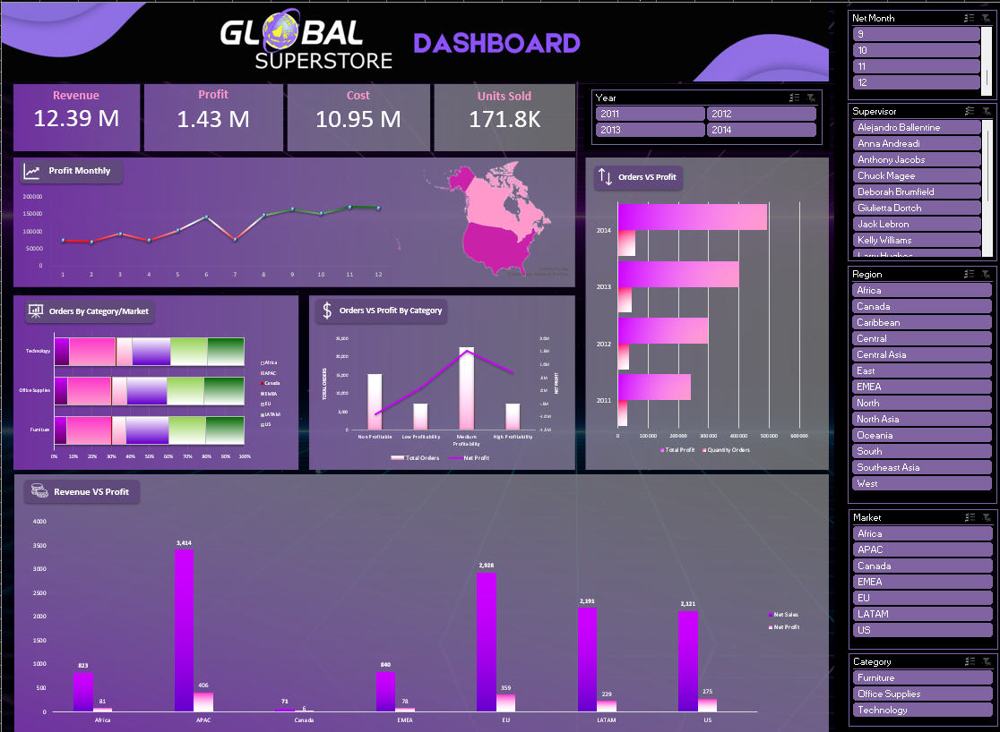

DASHBOARD
EXCEL

images/excel-dashboard.png missing — screenshot the Dashboard tab and save it here
Global Superstore — Excel Dashboard
KPI dashboard over ~50k order lines: revenue, profit, cost, orders up top, then profit by region, category mix by market, and net profit margin. Built the derived columns (net sales, net profit, profit category, returns excluded) so the pivots feeding the dashboard actually reconcile. Opens live in Excel Online.